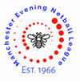

History of the Netball club.
Formerly know as Avondale Netball club has been running for over 30 years.
It has grown from a one team club to having ten teams.
Eight of the teams are in the local Machester based netball league, the MENL.
As well as having two teams in the North West Regional Championships.
Our club strategy is to further diversify and develop the club membership, level of play and the
types of competitions.
We are contstantly open to new members and supporting existing members in developing their
skills and to enjoy playing affordable netball, at a standard suited to their ability.
What we as a club love most is what a fun and friendly club it is.
Lisa Rice is our Chairperson and Coach, she first started playing in 2004
"It was netball that kept me engaged. Maintaining this is something I encourage as we continue
to develop as a club and welcome new players. I play for many netball teams, but being part of a club is
more than just the match play.
I enjoy being part of City of Manchester because we socialise, we support each other and we are
friends.
I am committed to making sure other people have an enjoyable experience playing for City of
Manchester and new members are given the same warm welcome I received."
As well as being a part of the MENL Manchester Evening Netball League, we are part of England
Netball and require membership to play for the club.
Information about MENL can be found on the MENL website:

Click here to visit MENLInformation about England Netball can be found on the England Netball website:
Click here to visit Engage